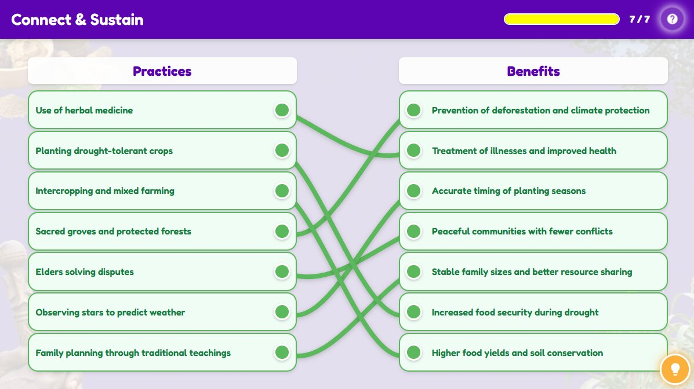

Indigenous Knowledge Systems helped African communities live in balance with nature, family, and health. In this challenge, drag each traditional practice to the benefit it provided. Ready to connect the dots of sustainability?

| Concept | Detail |
|---|---|
| Socio-economic practices | Early humans developed socio-economic practices for survival, including getting food, building shelter, organizing society, and expressing beliefs. |
| Economic activities | Economic activities like hunting, gathering, farming, and crafting met daily needs. |
| Social organization | Social organization centred on family and community, with roles divided by gender and age, supported by language and communication. |
| Shelter and clothing | Shelter and clothing evolved from caves and animal skins to built homes, jewellery, and body decoration. |
| Cultural and spiritual practices | Cultural and spiritual practices such as rock art and burial rituals reveal early humans’ creativity, beliefs, and emotional life, many of which have modern equivalents today. |